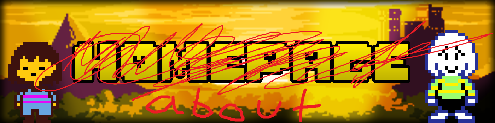

Submission Rules
- All submissions must have video proof in watchable quality and must be completed in one segment to be eligible for submission.
- Game audio must be present, except in cases of a game or technical glitch. Other audio, such as commentary or external background music, may be present.
- Any form of Tool Assisted Superplay such as savestates, frame advance or external RNG manipulation is banned outside of tool-assisted-runs.
- You may use any official release to perform your runs with. Small game modifications for runner’s commodity (quick restarts, language patches, music mods, etc.) are allowed, as long as it doesn’t provide any unfair advantage.
- Small glitches are allowed, as long as they don’t provide any significant benefit to the player. Generally these are glitches that don't skip any normally mandatory encounters or obtain gear earlier in the game than intended.
- Reloading save files during your run is not allowed. You can only do so if your game was closed due to a crash, such as at the ending of the Undertale neutral route before fighting Photoshop Flowey.